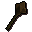

Bronze mace

| Config name | bronze_mace |
| Item id | 1422 |
| Value | 18 gp |
| Weight | 4lb |
| Members | No |
| Tradeable | Yes |
| Stackable | No |
| Equip slot | righthand |
| Options | Wield |
| Category | weapon_spiked |
| Defined in | scripts/skill_combat/configs/melee/maces.obj |
| Equipment stats | Stab att 1, Slash att -2, Crush att 6, Strength 5, Prayer 1 |
Bronze mace
A spiky mace.
Show 1 ground spawn on the world map → Open in knowledge graph →
How to make
| Skill | Level | XP | Ingredients | Tool | How | Where | Makes |
|---|---|---|---|---|---|---|---|
| Smithing | 2 | 12.5 | interface | anvil | 1 |
Sold at
| Shop | Shopkeeper | Stock |
|---|---|---|
| Flynn's Mace Market. | 5 |
Ground spawns
| Area | Coordinates | Level | Count | Map |
|---|---|---|---|---|
| Shantay Pass | 3320, 3137 | 0 | 1 | view |
Referenced in scripts
scripts/levelrequire/scripts/tier1.rs2scripts/levelup/scripts/levelup_unlocks_smithing.rs2